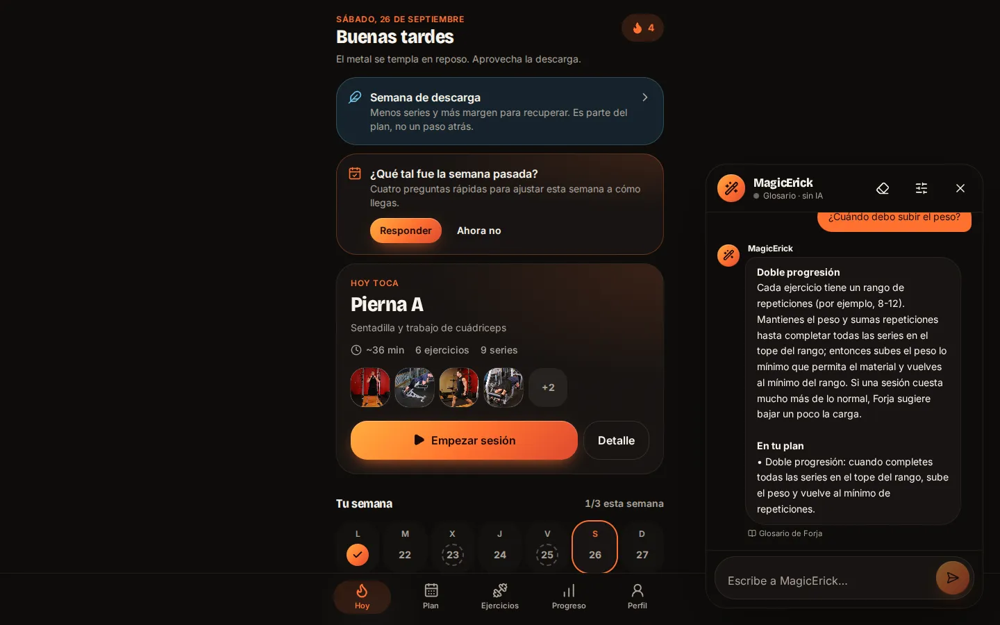
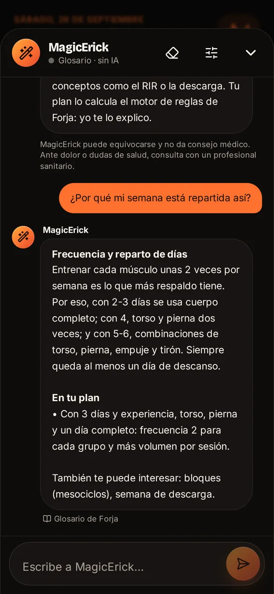

Una IA que explica, pero no decide
MagicErick es el asistente de Forja: explica por qué el plan es como es, qué significa cada concepto y cómo se hace cada ejercicio. Vive en una ventana de chat siempre a mano y nunca cambia el plan, que sigue siendo cosa del motor de reglas.
Quién responde
Si una vía falla, la siguiente responde sola. Las preguntas sobre dolor o lesiones añaden siempre el aviso de parar y consultar a un profesional sanitario.


El fallo que obligó a rediseñarlo
En el móvil se quedaba «pensando» para siempre. Los modelos locales necesitan entre 1 y 1,6 GB de memoria gráfica; el navegador del móvil perdía la GPU a mitad de respuesta y la petición nunca terminaba, sin ningún error.
Móviles y tabletas
No se ofrece la IA local: MagicErick usa la nube o el glosario, y se pueden borrar los modelos ya descargados.
Ordenadores
Prueba de arranque al cargar, 45 s como máximo hasta la primera palabra, 20 s entre palabras y detección de caída del worker.
Si algo falla
Se destruye el worker (libera la GPU), se responde por otra vía y no se vuelve a cargar solo en ese dispositivo.
Nube opcional con privacidad por diseño
| Pieza | Cómo se hizo |
|---|---|
| Cuenta | Opcional y sin contraseña: enlace de acceso por email. La app funciona completa sin ella |
| Sincronización | Local primero: solo se copian el perfil sin lesiones, las sesiones sin notas y los logros. Nunca molestias, medidas ni consentimientos |
| Base de datos | Supabase con RLS en todas las tablas: cada persona solo ve sus filas; el plan premium y la cuota solo los escribe el servidor |
| Contexto de la IA | A la nube solo va la pregunta y un resumen del plan sin edad, sexo, peso, trabajo, lesiones ni molestias; hay pruebas que lo garantizan |
| Borrado | Una Edge Function borra la cuenta y, en cascada, todos sus datos |
Premium sin pagos: la arquitectura para un plan de pago existe (funciones por plan leídas del servidor), pero hoy todo es gratis y no se cobra nada.